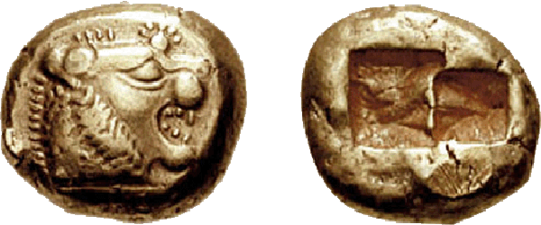
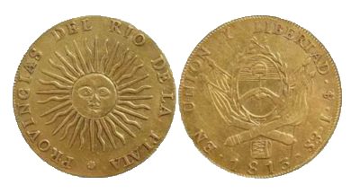

Reseña Histórica
La evolución de la numismática podría englobarse en dos grandes tipos de épocas:
a) Épocas en las que fueron utilizadas monedas no metálicas. Se producía un intercambio "natural" entre mercancías y productos codiciados para el uso y el consumo. Los pueblos típicamente
artesanos y marinos emplearon igualmente, como moneda, sus productos comunes de más valor y, a veces, productos que nos parecen inverosímiles, tales como las conchas y los dientes de cetáceo,
las telas, etc. Así, por ejemplo, los pueblos cazadores utilizaban las pieles como intercambio y los pueblos agricultores los productos de la tierra. Popularmente conocido como "trueque".
b) Épocas en que se utilizaron los metales como moneda. En un principio los utensilios de metal y los lingotes de oro constituyeron la "moneda" que sustituyó a los productos de cambio en las
transacciones comerciales. El peso, probablemente, determinó la constitución de la primera escala de valores completa. Un paso decisivo fue la impresión o grabado de un sello oficial que
garantiza y certifica el peso fijo del lingote.
Sobre su invención existen opiniones diversas. Para algunos el rey de Argos, Fidón, acuñó las primeras monedas de plata en la isla de Egina. Otros dicen que fueron los lidios, s.VI a. C. Tesis más recientes dicen que fueron los banqueros de la Jonia Meridional hacia el s. VII a. C.
Los historiadores e investigadores numismáticos fijan el antiguo reino de Lidia como la zona geográfica donde se acuñó la primera moneda del mundo, fabricada en una amalgama natural de oro y plata denominada electrum, que contaba con un valor de un tercio de estatera, medida griega adoptada por el resto de reinos y naciones durante varios siglos, hasta la llegada del denario romano.
La primer moneda Argentina
El día 13 de abril de 1813, la Asamblea del Año XIII aprobó la acuñación de la Primera Moneda Patria. Dicha pieza reproducía en una de sus caras la figura de un sol incaico “INTI” y el sello de la Asamblea del Año XIII en la otra, diseño replicado en la moneda de $ 1 del circulante actual.
